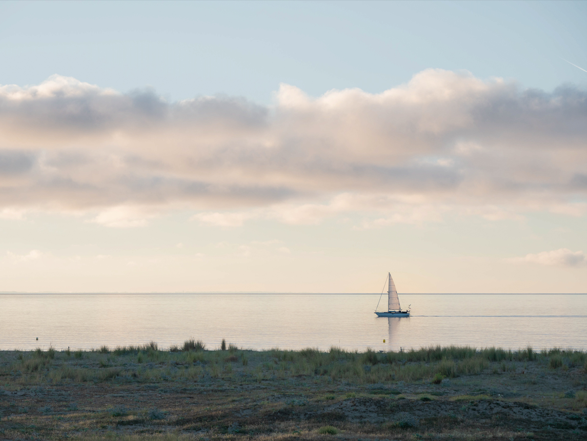

J'adore tout ce qui touche à l'audiovisuel, de la vidéo à la création graphique, en passant par la photographie. Je suis étudiant à l'ESSEC et crée ce site dans le cadre de mon cours sur la programmation informatique. J'ai déjà utilisé le HTML5 et le CSS3 pour coder des sites web (assez basiques)
Le WagonJe fais de la photo depuis de nombreuses années, que ce soit pour le plaisir ou en tant que pro. J'ai réalisé plusieurs petites vidéos et courts-métrages.
En première année de Global BBA, je débute ma vie étudiante à Cergy, charmante ville agréable à vivre...
J'ai commencé le code sur FranceIOI, où je me suis inité au python. Ensuite, membre d'un fablab durant de nombreuses années, j'ai appris à programmer en HTML5 et en CSS3, mais aussi en Arduino pour programmer un robot. Loin d'être un maître absolu, je maîtrise les bases.
Site réalisé avec un ami (sans CMS)